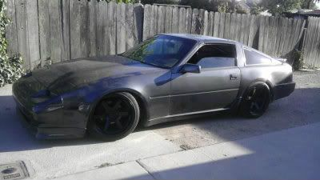

-
i have a question and looking for helpmy z31 turbo 89`
works fine, no vibrations even over 200km/h
but if i shift hard or in high rev without be carefully with the clutch
or taking my foot very fast away from gas, how smaller the gear than more intensive is the effect
the car is shaking and it makes noise like "klong klong"
i think it could be the faulty part OEM 37521 W1025
i don´t know what the english name is for this part
propeller shaft center bearing !?
here is it illustrated Nr.8
http://nissan4u.com/parts/300zx/el_z…opeller_shaft/
is my thinking right or could it be something else ?
how your experience ? thank you for help
my sunset Z youtu.be/HVp6CFcrx2U
making of video youtu.be/9BN8p-DuVuo -
I would check your transmission mount and differential mount first. Those often fail and can cause clunking noises when you shift.Prius… because Pretentious wouldn't fit across the back of the car…
Cheap, Fast, Reliable - pick any two
My 1986 Turbo Build -
Raise the rear and check your subframe bushings they make a clunk when you punch it. -
thats considered the drive shaft. US Z31's never came with a 2 piece shaft - no center bearing. you need to get under the car, verify Universal joint condition - at both ends of the shaft. trans mount, and rear diff mount would be wise to check too. Lastly - check the rear differential backlash/rotational play. I slightly remember my 87T - with the clutch style LSD unit would clunk/chatter when on/off the throttle or shifting quickly.Damn dirty angels....these cars!
Current Daily Driver - 86 Turbo.
Under the cover - THE BANANA… that needs to be re-energized.
sigpic -
oh ok thanks for your helps =)
in europe we have 2 piece shafts (87-89) and no LSD
i checkt the mounts of trans, engine and diff, they are all very strong, i think thery are all fine
i will switch the propeller shaft center bearing and will look if the problem is solvedmy sunset Z youtu.be/HVp6CFcrx2U
making of video youtu.be/9BN8p-DuVuo -
Can't you get the 1-piece shaft?
I'm just looking at the drawing of the differential, looks like it would be a short-nose r200 unless it's a mistake, can you take some pictures from under the car for us? I'm sure we'd all love to see
Because if you have the same subframe and diff as we do, you could order the other driveshaft shown on the drawing.. but the 2+2 version we use in canada -
we don´t have here many Z´s
but the 2 piece shaft is much lighter i think
next time i can make a pic ,it is a short nose diff without LSD but with Diff-Oil Coolermy sunset Z youtu.be/HVp6CFcrx2U
making of video youtu.be/9BN8p-DuVuo -
Any reason for the 2 piece? It seems like overkill for a 30" driveshaft.5.3 LSx Z31 -
it´s stock
maybe because we are driving faster and so is less vibrations on highspeed ?
it should be good , also the skylines,silvias and new Z´s has 2 piec shaftsmy sunset Z youtu.be/HVp6CFcrx2U
making of video youtu.be/9BN8p-DuVuo -
I have found 2 piece drive shafts to develop chatter when wearing out - also sometimes have metal guards that work free and make noise. I would expect the 2 piece to be less stressful on U joints…Damn dirty angels....these cars!
Current Daily Driver - 86 Turbo.
Under the cover - THE BANANA… that needs to be re-energized.
sigpic -
If its 2 piece then there has to be a carrier bearing holding it up. Jack up the car and wiggle the driveshaft and then rotate the tires 90 degrees and test again.
Take down the driveshaft to and physically inspect and play with the joints.My Build Thread -
as far as i know 2 piec shafts
are lighter, do less vibrations and less noise
this rubber mount is near to the diff and is where the 2 shafts go together
if i jack up the car i was shaking at the shaft and i seems to be a big play in the shaft mount
i will replace it next week and will tell u if the problem is solved =)
i will also take some pic´s of the bottom of the car to indicate more differenz between us and german Z´s
my sunset Z youtu.be/HVp6CFcrx2U
making of video youtu.be/9BN8p-DuVuo -
now an update we changed the propeller shaft center bearing
but the problem is still there
so we think it should be the transmission mount
does some one have the part nummber of this rubber block ?my sunset Z youtu.be/HVp6CFcrx2U
making of video youtu.be/9BN8p-DuVuo -
So from what I see there is absolutely no reason you need the 2-piece shaft, you could have easily used a 1-piece 2+2 turbo one
And the center bearing was probably just telling you the more serious problem of the tail of the transmission flopping around… in my opinion just weld the top flange to the dumbbell section and get rid of the rubber isolation, there's no need for two sets of bushings at the same place -
it is stock and i can´t get here a 1 piece shaft and i will not get a 1 piece shaft
does someone know the part number of the transmission mount ?my sunset Z youtu.be/HVp6CFcrx2U
making of video youtu.be/9BN8p-DuVuo

Copyright © 2006–. All rights reserved. Privacy Policy